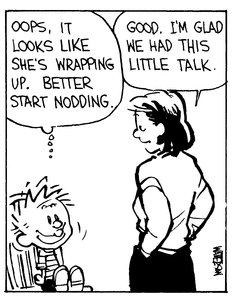

"It will do you no harm to find yourself ridiculous.
Resign yourself to be the fool you are." -- T.S. Eliot
Years ago I said to my dad, “I’d like to start my own business.” He said, “Well you can’t, so that’s that.”
So I shut up and didn’t give him the key info that I had already started the new business.
Because he was certain. That door was closed.
6 months later when I finally told him, he was hurt to have been left out. He did not at all remember our earlier conversation.
How does this story of my distant past relate to current-day friends? Y'know, the friends who are new fist-pounding evangelists for their own expertise on immune systems, politics, or whatever their government is or is not up to?
They think they know something. They are certain they know something.
Which is kind of weird.
Because so many of these folks are “spiritual” people who for decades have also been absolutely certain that there’s only one mind, and we are all one, and it’s all love, etc etc etc. Many have devoted their whole lives to being open to “not knowing,” and to not believing every thought that rolls through the mind.
And now here they are, feverishly following every What-If and Could-Be that the mind drums up, and hitting the block button on everyone who is of a different mind than they.
Certainty has moved on to a different subject of expertise.
Which I get. I mean, no one is immune to selfing.
After all, the self is all about knowing where it is, where it stands. The self requires a position, a side, a view-point.
Literally.
These words of location, of geography, say, “Here I am! Right here. This is me, the one on this political side.”
In this way, the self is defined. We know who we are. We’re the one who knows something about a virus, a vitamin, a government.
If we’re going to have a truly open mind for all those YouTube videos and screaming Facebook posts, we’re going to be left questioning who we are as a person.
Which perhaps is why anger rises up when we encounter disagreement. Constant defense must be maintained against any battering ram to the self story.
So naturally no one’s mind ever gets changed by contradictory input. With all that certainty, there is no contradictory input.
Only self-affirming views get through. The mind eliminates any other possibilities.
So yes my dad was certain. And yes my friends know without a doubt that their actions can keep a virus from killing them if it wants to, or that they’re being imprisoned by people who don’t understand the concept of immunity.
This isn't likely to change any time soon. It's possible that those folks predicting that these times are the start of a new era of peace and love may be in for some disappointment.
Because so far we humans adore our self stories, and we continue to seek the false comfort of certainty to maintain them.
No matter how infuriated it makes us, we have to belong to a side. A person needs to be placed somewhere.
Which is why we may never get to notice that we don’t know, have never known, and will never know, anything outside the filter of self story.
We don’t know what we don’t know.
We don’t know.
What a relief.
So much more peaceful than having to defend, and fight so hard for, the maintenance of a made-up, incomplete, and inaccurate, point of view.
Ok so, is anyone right? Does anyone know the truth, something more than a filtered viewpoint?
Well, we will be completely certain that we do.
And still,
we will actually
never know.
Click here to get your Mind-Tickled every week.
"The attachment to beliefs is
The greatest shackle.
To be free is
To know that
One does not know."
--wu'hsin
